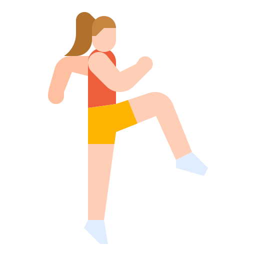
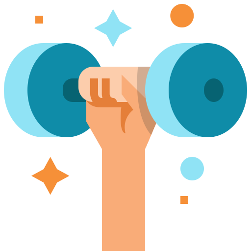
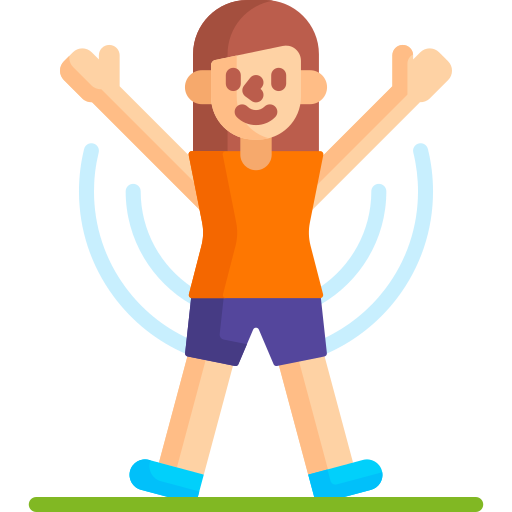

Cardio-Workout

When it comes to cardiovascular exercises, the options are endless to improve your overall quality of life
when we carry out a cardio training our organism supports adaptations because of the frequent practice of aerobic exercises.
This accomodation and change in our body will be more or less strong depending on the frequency, intensity and duration.
Cardio helps one burning more calories quickly while improving our metabolism
Benifts Of Cardio-Workout
Doing cardio continually brings many benefits to our health. That’s why Fit world suggests some of the most important cradio Workout
- Cardio exercises increase the energy level and the resistance capacity
- improving our physical condition. Strengthening of the heart and lungs.
- cardio training lowers body fat and helps burn a lot of calories, speeds up our metabolism and improves our body mass index (BMI)
- control blood pressure and strengthens the immune system also improves blood circulation and increases heart rate
Here We Go
The following exercises allow a person to perform cardio almost anywhere, such as in their home, public park, or outdoor space.
Marching

How To Do
- Start with the feet together or no more than 2 to 3 inches (in) apart.
- Bend the knees slightly and lift one leg 6–10 in off the floor.
- Hold this position for 6-12 seconds and return the foot to the floor
- Repeat for the opposite leg.
Arm circles

How To Do
- Rotate the arms in a circular motion, both clockwise and counterclockwise. The movement may resemble a butterfly or backstroke.
Jumping jacks

How To Do
- Begin with the feet hip-width apart and arms down
- Raise the arms out to the sides, straight in the air while jumping out with the feet apart.
- ump back into the starting position and land softly on the balls of the feet, bringing the arms back into the body.
Jumping squat
.png)
How To Do
- Stand with the feet hip-width apart and arms at the sides
- Bend at the knees to squat.
- From the squat position, jump in the air and extend the hips until the body is straight.
- Land softly on the balls of the feet, rolling backward to absorb the shock in the heels.
Skipping rope
About
- Increase the difficulty of jumping an air rope in the beginner exercises to jumping with a real rope at home.
- A person can alternate between jumping with both feet and jumping from one foot to the other.
Swimming

About
- Swimming is a great way to switch up your land-based workouts, train your muscles from head to toe and take it easy on your joints